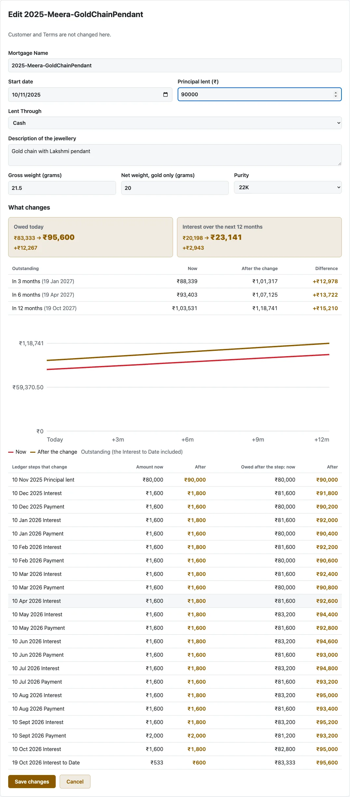

Chapter 006 · Lesson 2
The third step of every change is check_replays: replay each Mortgage the change touched, and refuse if any Payment has become larger than what was owed on its date. This lesson shows why it runs after the write, and has you trip it on Meera's chain.
Meera's chain was lent at ₹80,000 on 10 Nov 2025. Suppose the Lender opens the chain's Edit page and, by mistake, types ₹1,000 as the Principal. On its own, ₹1,000 is a perfectly good number. The trouble is the facts already stored around it: Meera paid ₹1,600 on 10 Dec 2025. On a ₹1,000 Mortgage, she could never have owed that much. Saving the edit would leave a Payment that pays more than everything owed, and the engine can't give a Ledger for that.
The same Edit Mortgage page can correct the starting rate, Interest Mode and Part-Month Rule. These are the Terms the Mortgage began with. Choose them under Starting Terms; the form's Preview shows what replaying the Mortgage from its start would change.
Every existing Payment stays attached to the Mortgage and is replayed on its original date under the corrected starting Terms. Later Term Changes keep their dates and still take effect from those dates. This is a correction to the original facts, not a new agreement from today. If the Customer agreed to different Terms from a particular Accrual Date onward, use a dated Term Change instead; that leaves the past months under their original Terms.
Read Owed today in the Preview before and after. The Ledger table shows which past steps changed, including Payments. A correction is refused if replay reaches a Payment larger than the Outstanding owed on that Payment's date. For example, lowering the chain's Principal to ₹1,000 makes its ₹1,600 Payment on 10 Dec 2025 larger than the ₹1,021 then owed, so both Preview and Save are refused. The same check protects a starting-Term correction.

How would you check for it? You could try to write a rule for each kind of edit: "the Principal can't go below…" what, exactly? It depends on every Payment, every month's interest, every Term Change and every Capitalisation since. The only thing that knows is the engine itself.
Don't predict. Write the change into the transaction, then replay the Mortgage from what's now stored, exactly as every screen would. If the replay hits a Payment larger than what was owed on its date, refuse, and the transaction rolls back. One check covers every change, now and in future, because it asks the engine instead of copying its rules.
This works only because nothing owed is stored. Every figure is replayed from facts (trap #4, owned by chapter 004). Write new facts, replay, and you see exactly what the book would say.
flowchart TD E["PUT /api/mortgages/2
amount_lent: ₹1,000"] --> R1{"early refusals
lines 131–180"} R1 -->|"fails"| X1["409 / 422"] R1 -->|"pass"| W["UPDATE mortgage
line 182 (not committed)"] W --> C["check_replays(conn, [mortgage_row(…)])
line 185"] C --> RP["replays(): this row +
stored Payments, Term Changes"] RP --> L["ledger(today)
compute_ledger()"] L -->|"a Payment > owed"| OP["raise Overpayment"] OP --> X2["422: the Payment on 10 Dec 2025
would be more than the ₹1,021 owed then"] X2 -->|"engine.begin() rolls back"| RB[("nothing saved")] L -->|"all fine"| H["audit.record()
then COMMIT"]
Notice the early refusals. Some problems don't need a replay to spot (a start date in the future, a name already used), so edit_mortgage refuses those first, with clearer messages. The replay is the catch-all for everything else.
check_replayscheck_replays() · lines 26–3626 def check_replays(conn: Connection, rows: Sequence[RowMapping], today: date) -> None:
27 """Replay each Mortgage; refuse if any Payment is now larger than what was owed."""
28 replayed = replays(conn, rows) ①
29 for row in rows:
30 try:
31 replayed[row["id"]].ledger(today) ② ◀
32 except Overpayment as over:
33 raise unprocessable( ③
34 f"{row['name']}: the Payment on {over.on:%d %b %Y} would be more than "
35 f"the {format_inr(over.outstanding)} owed then"
36 ) from None
replays() (chapter 005, lesson 1) takes the Mortgage rows you hand it, and queries each one's non-Voided Allocations and Term Changes fresh. Remember that: the row comes from the caller, the rest from the database.from None hides the original traceback, since this is an expected refusal, not a crash.Overpayment · lines 93–103, trimmed93 class Overpayment(Exception):
94 """An Allocation larger than everything owed on its date."""
⋮
101 self.payment_id = allocation.payment_id
102 self.on = allocation.on
103 self.outstanding = outstanding
_Run.pay_through() · lines 252–257252 def pay_through(self, day: date) -> None:
253 while self.pending and self.pending[0].on <= day:
254 allocation = self.pending.pop(0)
255 owed = self.outstanding(allocation.on)
256 if allocation.amount > owed:
257 raise Overpayment(allocation, owed) ◀
This is the same pay_through you met in chapter 004, lesson 3. Each Allocation is compared with the whole amount owed on its date, the Interest to Date included. A Payment can pay off everything, but never more.
edit_mortgage: refuse what's obvious, then write and check_LOCKED_WHEN_CLOSED and edit_mortgage() · lines 47–53 and 127–180, trimmed47 _LOCKED_WHEN_CLOSED = {
48 "start_date": "start date",
49 "amount_lent": "Principal",
50 "monthly_rate_bps": "Terms", ⑤
51 "interest_mode": "Terms",
52 "part_month_rule": "Terms",
53 }
⋮
127 def edit_mortgage(
128 conn: Connection, mortgage_id: int, edit: MortgageEdit, today: date, now: datetime
129 ) -> None:
⋮
131 if edit.start_date > today:
132 raise unprocessable("Start date cannot be in the future")
133 mortgage = replay(conn, mortgage_id)
134 before = mortgage.row ①
135 after = edit.model_dump(exclude={"terms"})
136 after.update(
137 edit.terms.model_dump()
138 if edit.terms
139 else {
⋮ … the stored Terms …
143 )
⋮ … keep lent_through if it was left out …
146 changed = audit.changes(before, after, _AUDITED_EDITS)
147 locked = dict.fromkeys(
148 _LOCKED_WHEN_CLOSED[c.field] for c in changed if c.field in _LOCKED_WHEN_CLOSED
149 )
150 if before["status"] != MortgageStatus.ACTIVE and locked:
⋮ … 409: "… is redeemed: reopen it to change its start date, Principal and Terms" …
156 taken = conn.execute(
⋮ … 409: the Mortgage Name is already used …
167 stranded = [
⋮ … 422: a Term Change would no longer be on an Accrual Date …
177 first_payment = min((a.on for a in mortgage.allocations), default=None)
178 if first_payment is not None and edit.start_date > first_payment:
179 raise unprocessable(
180 f"There is a Payment on {first_payment:%d %b %Y}, before that start date"
edit_mortgage() · lines 182–187182 conn.execute( ② write
183 update(mortgage_table).where(mortgage_table.c.id == mortgage_id).values(**after)
184 )
185 check_replays(conn, [mortgage_row(conn, mortgage_id)], today) ③ check ◀
186 if changed:
187 audit.record(conn, now, "mortgage", mortgage_id, "edited", changed) ④ History
before is the row as it was before the edit.UPDATE runs inside the route's transaction. Nothing is committed yet, but every later query on the same conn sees the new values.mortgage_row, so the check replays the new Principal, start date and starting Terms. Line 185 is the line the check-yourself exercise deletes.Try it on your served book. PUT takes every editable field, so the body repeats the chain's details with only amount_lent changed: ₹1,000 is 100000 paise.
B=http://127.0.0.1:8765/api/mortgages/2
J='content-type: application/json'
EDIT='{"name": "2025-Meera-GoldChainPendant", "start_date": "2025-11-10", "amount_lent": 100000,
"description": "Gold chain with Lakshmi pendant", "gross_weight_mg": 21500,
"net_weight_mg": 20000, "purity_karat": 22, "lent_through": "cash"}'
curl -s -w ' %{http_code}
' -X PUT -H "$J" -d "$EDIT" "$B"
curl -s -w ' %{http_code}
' -X POST -H "$J" -d "$EDIT" "$B/edit-preview"Both answer the same:
{"detail":"2025-Meera-GoldChainPendant: the Payment on 10 Dec 2025 would be more than the ₹1,021 owed then"} 422Here's what happened inside the PUT:
| Step | Line | What happened |
|---|---|---|
| Refuse? | 131–180 | Start date not in the future; the chain is Active; the name is its own; no Term Changes; first Payment (10 Dec 2025) not before 10 Nov. All pass |
| Write | 182 | amount_lent = 1,00,000 paise, uncommitted |
| Check | 185 | Replay from the new row: started ₹1,000 on 10 Nov |
10 Dec, interest: 2% of ₹1,000 = ₹20 (unpaid ₹20) | ||
10 Dec, interest_to_date: 1 day of the new month, ₹1 (unpaid ₹21) | ||
| ledger.py 256 | 10 Dec Payment ₹1,600 > ₹1,021 owed: Overpayment | |
| Refused | 33 | 422 with the message above. The route's transaction rolls back |
| After | The chain is still lent ₹80,000. History: 271 rows before, 271 after |
From scripts/run_throughs.py (section L2): the requests through the real API, and the ₹1,000 Ledger from MortgageReplay with the chain's real row at ₹1,000 and no Payments, at commit d6a92ab.
The 10 Dec Interest to Date is there because pay_through asks what was owed on 10 Dec, and today always counts (chapter 004, lesson 2). The Preview gives the same answer because it runs the same edit_mortgage (lesson 4).
Predict: lower the chain to ₹10,000 instead ("amount_lent": 1000000, through edit-preview). Is it refused? If so, which Payment does the message name?
422 2025-Meera-GoldChainPendant: the Payment on 10 Jul 2026 would be more than the ₹1,463 owed thenAt ₹10,000 each month's interest is only ₹200, so each ₹1,600 Payment pays ₹1,400 of Principal. By July the Principal is low enough that the ₹1,600 paid that day is more than everything owed. The check names the first Payment the replay can't apply, because the engine stops there. No rule written by hand would have found 10 Jul. At ₹50,000 the edit Previews without a refusal.
From scripts/run_throughs.py (section L2).
Predict: suppose line 185 passed [before] instead of [mortgage_row(conn, mortgage_id)]. What would the ₹1,000 edit do?
It would save. replays() takes the Principal and start date from the row it's handed, and only queries the Payments and Term Changes. before still says ₹80,000, so the replay would check the old Mortgage and pass. That's why edit_mortgage reads the row back after writing it. add_term_change can pass its old row (line 113), because a Term Change doesn't change the mortgage row: the new term_change row is queried fresh.
Three changes call check_replays although nothing they do can make a Payment too large:
void_payment (line 247). A Void only takes a Payment away, so what's owed afterwards can only go up. A Void Preview of Meera's 10 Sep Payment (Payment 23, ₹2,000 to the chain and ₹10,000 to the bangles) shows the chain going from ₹83,333 to ₹85,333 owed today, and the bangles from ₹1,51,500 to ₹1,61,500. No later Payment becomes too large.add_term_change (line 113) and remove_term_change (line 255). A Term Change starts today or later, and only a coming one can be removed, so neither reaches the months that past Payments paid.Delete any of those three lines and all 607 tests still pass (checked at commit d6a92ab). They stay so every change follows the same pattern, and so a future rule that could trip them is caught without anyone having to remember to add the check.
The Void Preview figures from scripts/run_throughs.py (section L2).
Three changes don't call it at all: create_mortgage (a new Mortgage has no Payments), set_collateral and the photo changes (they don't touch anything a Ledger is replayed from).
A Payment can be allocated to several Mortgages, and the bulk Closures take several at once. When one of them is refused, the Lender needs to know which. refusal_names_mortgage is wrapped around each one:
refusal_names_mortgage() · lines 39–4839 @contextmanager
40 def refusal_names_mortgage(conn: Connection, mortgage_id: int) -> Iterator[None]:
41 """A refusal of one of several Mortgages says which, unless it already does."""
42 try:
43 yield ①
44 except HTTPException as refused:
45 name = mortgage_row(conn, mortgage_id)["name"]
46 if name not in str(refused.detail): ② ◀
47 refused.detail = f"{name}: {refused.detail}"
48 raise
@contextmanager turns a generator into something you can use in a with block. The body of the with runs at the yield, so any exception it raises arrives in the except here.Two Previews of bulk Closures on the served book, to see both cases:
| Request | Answer |
|---|---|
POST /closures/waive-preview: the bangles with ₹0 paid, and the chain with its whole ₹83,333 paid | 422 · 2025-Meera-GoldChainPendant: ₹83,333 covers the ₹83,333 owed: Redeem it instead |
POST /closures/redeem-preview: the chain and the coin | 422 · 2026-Kavita-GoldCoin is already redeemed |
From scripts/run_throughs.py (section L2).
In the first, waive's own message doesn't say which Mortgage, so the name is added. In the second, not_closable's message already starts with it. In both, the bangles' or chain's part that was fine is rolled back too: all or none.
reopenReopening a Redeemed Mortgage has to Void its Final Payment. Rather than copy the Void, reopen calls void_payment:
reopen() · lines 376–404, trimmed376 def reopen(
377 conn: Connection, mortgage_id: int, reason: str, today: date, now: datetime
378 ) -> None:
⋮
381 row = mortgage_row(conn, mortgage_id)
382 if row["status"] == MortgageStatus.ACTIVE:
383 raise HTTPException(status.HTTP_409_CONFLICT, f"{row['name']} is Active")
384 _set_closure( ① Active again
385 conn,
386 mortgage_id,
387 status=MortgageStatus.ACTIVE,
⋮ … clear closed_on, redemption_payment_id, recovered_amount, closure_note …
392 )
393 if row["redemption_payment_id"] is not None:
394 void_payment(conn, row["redemption_payment_id"], reason, today, now) ② ◀
395 check_replays(conn, [mortgage_row(conn, mortgage_id)], today)
396 audit.record(
⋮ … "reopened", status old → active, note=reason (lesson 3) …
404 )
void_payment() · lines 223–248, trimmed223 def void_payment(
224 conn: Connection, payment_id: int, reason: str, today: date, now: datetime
225 ) -> None:
⋮
228 # Read straight from the table: loading the Payment would replay its Mortgages, ③
229 # which Reopening has just made Active with its final Payment still in place.
230 found = conn.execute(
231 select(payment_table.c.voided_at).where(payment_table.c.id == payment_id)
232 ).one_or_none()
⋮ … 404 if missing; 409 "Already voided" …
237 rows = mortgages_of(conn, payment_id)
238 for row in rows:
239 if row["redemption_payment_id"] == payment_id: ④
240 raise HTTPException(
241 status.HTTP_409_CONFLICT,
242 f"This is the final Payment of the closing of {row['name']}: "
243 "reopen the Mortgage instead, which voids it",
244 )
245 refuse_unless_active(row)
246 write_void(conn, payment_id, reason, now)
247 check_replays(conn, rows, today)
248 record_void_history(conn, payment_id, reason, now)
void_payment reads just the one column it needs, instead of loading the Payment the usual way, which would replay its Mortgages.reopen, line ① has already cleared redemption_payment_id, so it passes.On the served book, POST /api/payments/26/void (the coin's Final Payment) is refused: "409 This is the final Payment of the closing of 2026-Kavita-GoldCoin: reopen the Mortgage instead, which voids it". POST /api/mortgages/3/reopen-preview shows the Reopen doing it instead: the coin goes from Redeemed owing ₹0 to Active owing ₹55,067, with Payment 26 and the 5 Oct Interest to Date gone from its Ledger (from scripts/run_throughs.py, section L2).
record_payment, line 54 checks only the ordinary part of the Payment. Each redeeming part is written by _close_with_payment and checked there, at line 638, after the Closure is set, because its Interest to Date is only owed once the Mortgage closes.Why does edit_mortgage write the edit before checking it?
Which of these can check_replays refuse on today's code?
A two-Mortgage Payment is refused because one part is too large. What is saved?
engine.begin(). Any refusal rolls back every row the request wrote.
In tests/test_changes.py, read test_an_edit_that_would_make_a_payment_too_large_is_refused (line 206). It builds a ₹1,00,000 Mortgage with a ₹1,06,000 Payment, then lowers the Principal to ₹50,000. Work out the ₹54,500 in its message by hand, then read check_replays again.